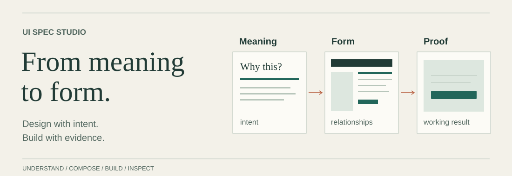

UI SPEC STUDIO / ASSET REVIEW
One source. Real conditions.
Inspect visual material at its actual size, then in the surface it serves.
A scoped QA workbench using the existing publication assets and a sourced functional icon.
A composition, not just a file

The illustration is unavailable. The method remains: study sources, select a foundation, realize and verify the result.
Read the silhouette
Lucide Search, rendered at actual CSS sizes. Optical judgment and file dimensions provide different evidence.
The named control has its own usable target.
Type in its actual role
Research, with evidence.
让研究，抵达判断。
0123456789 · ¥1,280.00 · 2026/10/25
Installed system fonts exercise real content and fallback. This fixture distributes no font binaries.
Keep a quiet equivalent
A locally authored decorative loop pauses on user request, outside the viewport, and when the document is hidden. Reduced-motion preference uses the static composition.